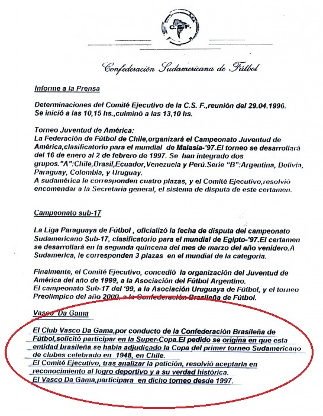

O Campeonato Sul-Americano de Clubes Campeões foi uma competiçãodisputada em 1948 de nível continental, promovida pelo Colo-Colo atual campeão chileno. Foi o torneio que inspirou a criação da Champions League em 1955 e da Copa Libertadores da América em 1960. A competição foi vencida pelo Vasco da Gama de forma invicta e recebeu seu reconhecimento pela CONMEBOL em 1996 como primeiro campeão continental, dando direito ao Vasco de participar da Supercopa Libertadores competição destinada somente aos campeões da Copa Libertadores.

Participantes
River Plate
Litoral
Vasco da Gama
Chile
Emelec
Deportivo Municipal
Nacional
Partidas do Vasco
14/02/1948 Vasco 2-1 Litoral-BOL (Lelé, duas vezes)
18/02/1948 Vasco 4-1 Nacional-URU (Ademir, Maneca, Danilo e Friaça)
25/02/1948 Vasco 4-0 MunicipalL-PER (Lelé, Ismael e Friaça, duas vezes)